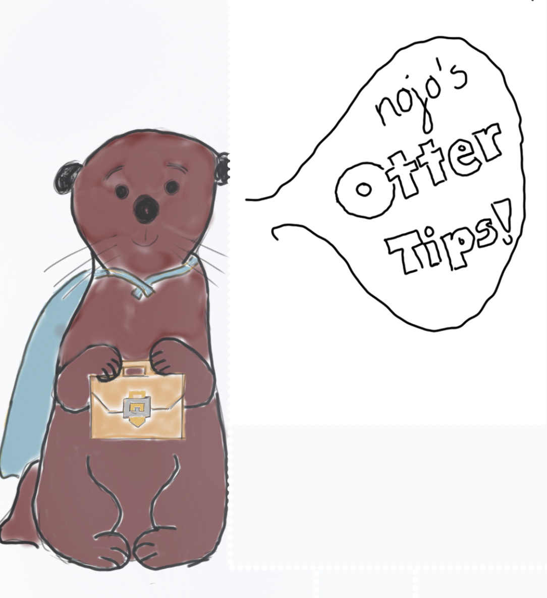

<!DOCTYPE html>
<html>
<body>
 

<!--
<!--Add otter saying "Otter hacks"-->

 

<style>


<h1>Interview Tips/Suggestions</h1>

</div>

<h2><u>1. Preperation</u></h2>

<h3>Company Learning </h3>

<h4> A. Find out everything you can about the company; employers love it if you know what they do and what their goals are. </h4>
<p> Employers love to know that you know about what they do and what their mission statement is centered around.  </p>

<h3> Future Goals </h3>
<h4> A.The most common question asked by employers is "What do you see yourself in 5 years?" Many people aren't ready, so be prepared for this common question. </h4>
<p>This will not only show that you are prepared, but that you have enough professionalism to think forward. </p>


<h2><u> 2. Actual Interview</u></h2>
<h3> Attire </h3>
<h4> A. Dress in professional clothing to show you are serious about applying for this job. </h4>
<p> Employers will love that you decided to dress up. However, make sure to not overdue it - this makes you seem inaccessible to employers. </p>

<h3> Confidence </h3>
<h4> A. Present yourself with confidence - there is a reason you are at an interview; use it to your advantage. </h4>
<p> Actually greeting your potential future employer may be the most terrifying thing, but know that you have accomplished much to get an interview in the first place. Shake the employer's hand confidently and don't forget to make eye-contact. Believe us, we've been in your shoes before.</p>

<h2><u> 3. Post-Interview </u></h2>
<h3> Thank-You Note </h3>
<p> Use this website 
<a href="https://www.thebalance.com/job-interview-thank-you-letter-examples-2063964 "> here. </a>  </p> 


<h1> <i> GOOD LUCK WITH YOUR INTERVIEW, WE BELIEVE IN YOU! </i></h1>

</body>
</html>

